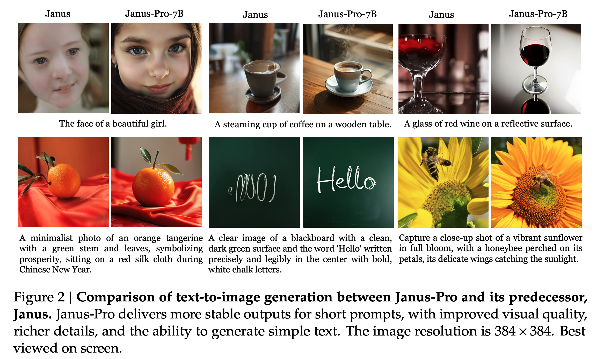
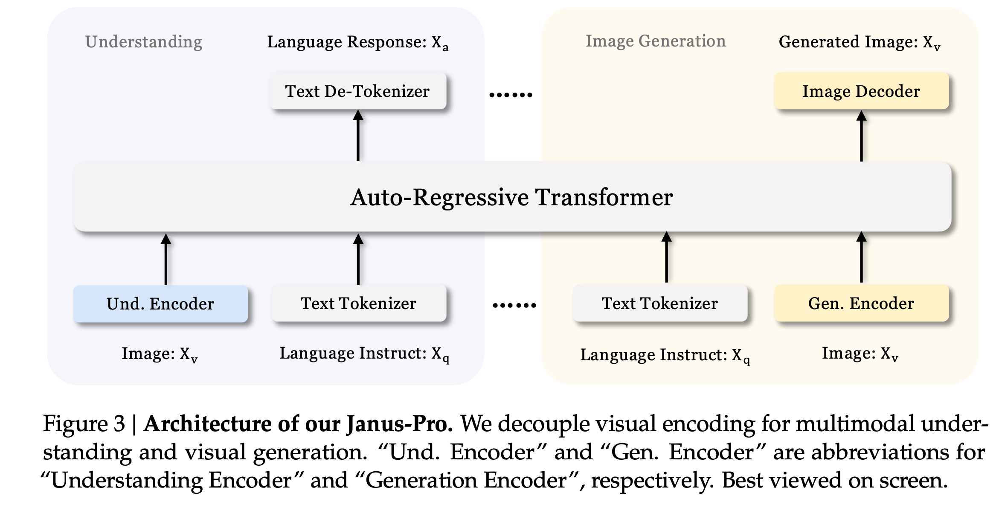
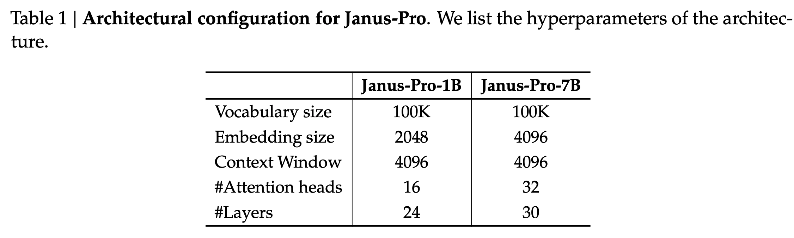
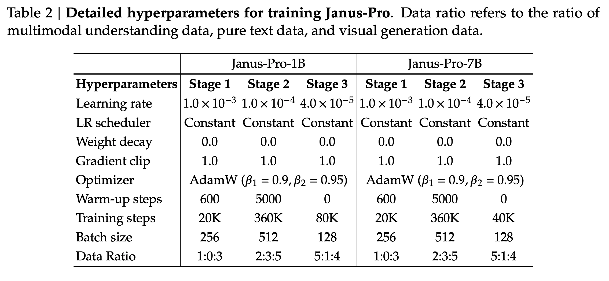
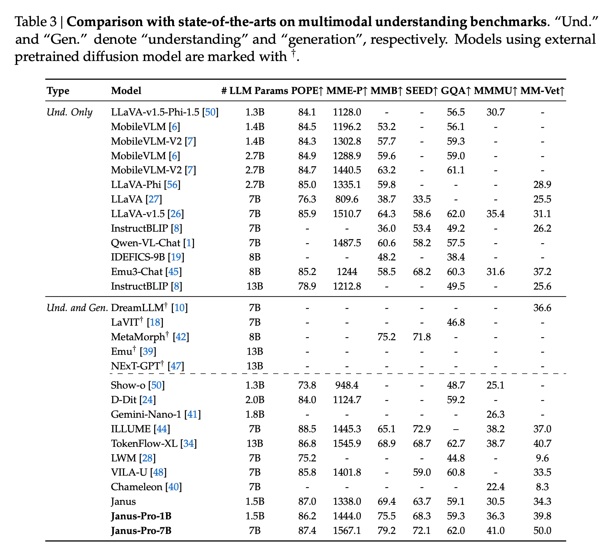

Janus-Pro
Unified Multimodal Understanding and Generation with Data and Model Scaling
papers
summary
research
diffusion
JanusPro is here, the next generation of the Janus model, with a few surprises (even for me!). I liked JanusFlow a lot, but the JanusPro 1B is what caught my eye. Here is a summary of the paper:

Architecture
- Same as the previous gen Janus model.
- Decouple visual encoding for multimodal understanding and generation.
- SigLIP encoder as the feature extractor for multimodal understanding. The features are flattened from a 2D grid into a 1D sequence and projected into the LLM space using an adaptor.
- VQ tokenizer to convert images into discrete IDs for visual generation tasks. JanusFlow used rectified flows instead. The ID sequence is flattened to 1D, and a generation adaptor maps the codebook embeddings corresponding to each ID into the input space of the LLM.
- All these feature sequences are then concatenated and fed into an autoregressive model with two prediction heads: one for text generation and the other for visual generation.

Training Strategy Optimization
- Similar to the previous version of Janus, there are three stages of training here, but with some optimizations and subtle differences.
- The length of the training run in stage I, focusing on training the adaptors and the image head, is increased, allowing sufficient training on the ImageNet dataset.
- In stage II, the authors drop the ImageNet data and directly utilize regular text-to-image data to train the model to generate images based on dense descriptions. This resulted in better efficiency and improved performance.
- The data ratio of multimodal data, text data, and text-to-image data in SFT of stage III is also changed from 7:3:10 to 5:1:4.
Data Scaling for Multimodal Understanding
- 90 million samples in pretraining, including captions data, data for tables, charts, and document understanding.
- For SFT, the authors incorporate additional datasets from DeepSeek-VL2, such as MEME understanding, Chinese conversational data, and datasets to enhance dialogue experiences.
Data Scaling for Visual Generation
- Noise in real-world datasets leads to instabilities in training text-to-image generation and aesthetically poor outputs.
- To overcome the above, the authors add 72 million samples of synthetic aesthetic data, bringing the ratio of real to synthetic data to 1:1 during the unified pretraining stage.
- Synthetic data helps models converge faster with significantly improved aesthetic quality in the outputs.
Model Scaling
As expected, when the LLM is scaled up, the convergence speed of losses for both multimodal understanding and visual generation improved significantly compared to the smaller model.

Experimental Details
- DeepSeek LLM with a sequence length of 4096 as the base model.
- SigLIP-Large-Patch16-384 as the vision encoder for understanding tasks.
- The generation encoder has a codebook of size 16384 and downsamples images by a factor of 16.
- Both the understanding adaptor and the generation adaptor are two-layer MLPs.
- A resolution of 384x384 is used for all the images. For understanding tasks, the longer side is resized, and the shorter side is padded. For generation tasks, the longer side is cropped and the shorter side is resized.
- Sequence packing is used.
- Trained on HAI-LLM (a distributed framework on top of PyTorch), the whole training process took about 7/14 days on a cluster of 16/32 nodes for 1.5B/7B model, each equipped with 8 A100 (40GB) GPUs.

Results and Comparison to Other Unified Models
How do these two models perform on the benchmarks? Remember Transfusion and Chameleon from Meta? How does JanusPro perform when compared to it?
